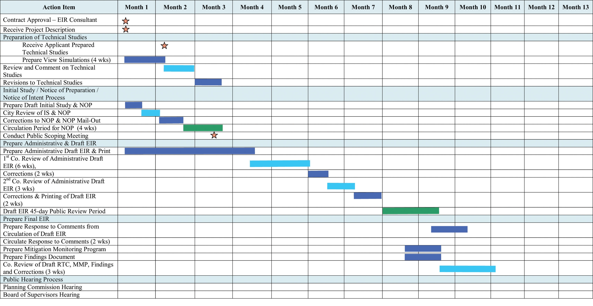
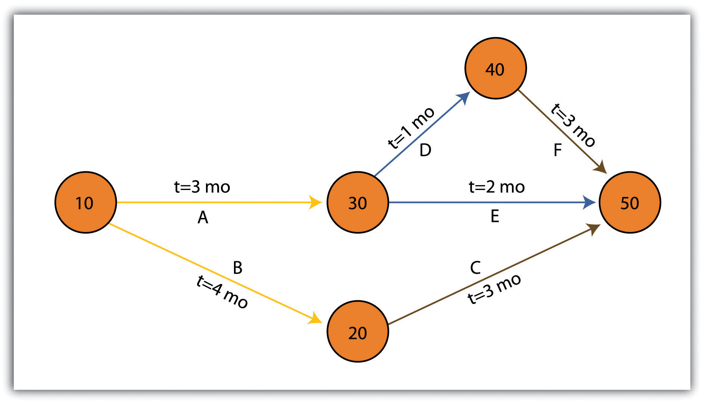
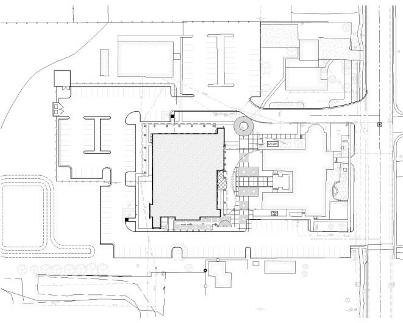
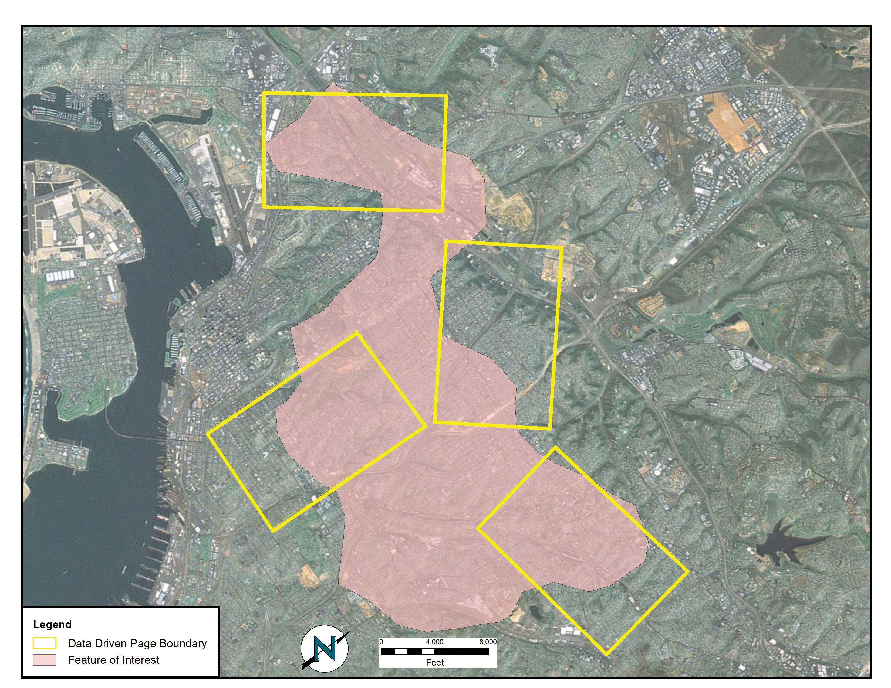
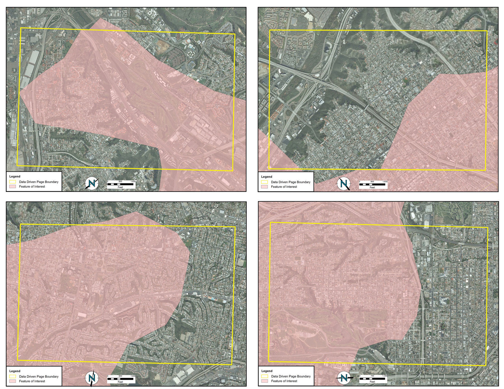
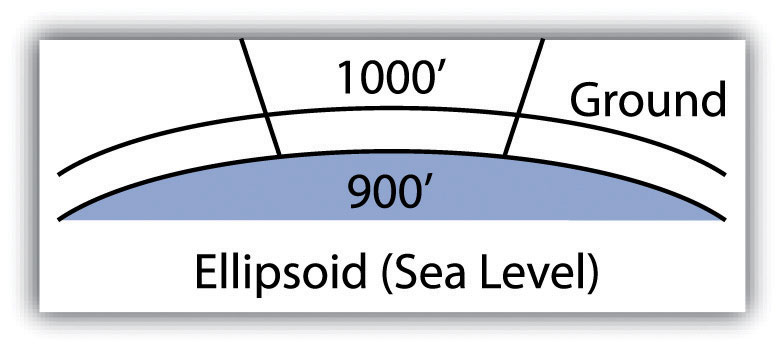
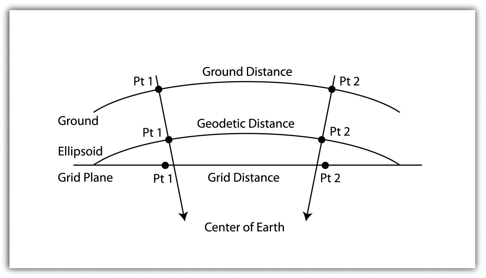

As a project manager, you will find that there are many tools and techniques that will assist your efforts. While some of these are packaged in a geographic information system (GIS), many are not. Others are mere concepts that managers must be mindful of when overseeing large projects with a multitude of tasks, team members, clients, and end-users. This section outlines a sampling of these tools and techniques, although their implementation is dependent on the individual project, scope, and requirements that arise therein. Although these topics could be sprinkled throughout the preceding chapters, they are not concepts whose mastery is typically required of entry-level GIS analysts or technicians. Rather, they constitute a suite of skills and techniques that are often applied to a project after the basic GIS work has been completed. In this sense, this section is used as a platform on which to present novice GIS users with a sense of future pathways they may be led down, as well as providing hints to other potential areas of study that will complement their nascent GIS knowledge base.
One of the most difficult and dread-inducing components of project management for many is the need to oversee a large and diverse group of team members. While this text does not cover tips for getting along with others (for this, you may want to peruse Unnamed Publisher’s selection of psychology/sociology texts), ensuring that each project member is on task and up to date is an excellent way to reduce potential problems associated with a complex project. To achieve this, there are several tools available to track project schedules and goal completions.
The Gantt chart (named after its creator, Henry Gantt) is a bar chart that is used specifically for tracking tasks throughout the project lifecycle. Additionally, Gantt charts show the dependencies of interrelated tasks and focus on the start and completion dates for each specific task. Gantt charts will typically represent the estimated task completion time in one color and the actual time to completion in a second color (Figure 10.2 "Gantt Chart"). This color coding allows project members to rapidly assess the project progress and identify areas of concern in a timely fashion.
Figure 10.2 Gantt Chart
PERT (Program Evaluation and Review Technique) charts are similar to Gantt charts in that they are both used to coordinate task completion for a given project (Figure 10.3 "PERT Chart"). PERT charts focus more on the events of a project than on the start and completion dates as seen with the Gantt charts. This methodology is more often used with very large projects where adherence to strict time guidelines is more important than monetary considerations. PERT charts include the identification of the project’s critical path. After estimating the best- and worst-case scenario regarding the time to finish all tasks, the critical path outlines the sequence of events that results in the longest potential duration for the project. Delays to any of the critical path tasks will result in a net delay to project completion and therefore must be closely monitored by the project manager.
Figure 10.3 PERT Chart
There are some advantages and disadvantages to both the Gantt and PERT chart types. Gantt charts are preferred when working with small, linear projects (with less than thirty or so tasks, each of which occurs sequentially). Larger projects (1) will not fit onto a single Gantt display, making them more difficult to visualize, and (2) quickly become too complex for the information therein to be related effectively. Gantt charts can also be problematic because they require a strong sense of the entire project’s timing before the first task has even been committed to the page. Also, Gantt charts don’t take correlations between separate tasks into account. Finally, any change to the scheduling of the tasks in a Gantt chart results in having to recreate the entire schedule, which can be a time-consuming and mind-numbing experience.
PERT charts also suffer from some drawbacks. For example, the time to completion for each individual task is not as clear as it is with the Gantt chart. Also, large project can become very complex and span multiple pages. Because neither method is perfect, project managers will often use Gantt and PERT charts simultaneously to incorporate the benefits of each methodology into their project.
While a GIS commands a large swath of the computer-generated mapping market share, it is not the only cartographic player in town. GIS, as you now hopefully understand, is primarily a database-driven mapping solution. Computer-aided design (CAD), on the other hand, is a graphics-based mapping solution adopted by many cartographers; engineers in particular. Historically speaking, points, lines, and polygons in a CAD system do not link to attributes but are mere drawings representing some reality. CAD software, however, has recently begun to incorporate “smart” features whereby attribute information is explicitly linked to the spatial representations.
CAD is typically used on many projects related to surveying and civil engineering work. For example, creating a cadastral mapA cadastral map shows the boundaries and ownership of land parcel. for a housing development is a complex matter with a fine scale of exactitude required to ensure, for example, that all electrical, sewer, transportation, and gas lines meet at precise locales (Figure 10.4 "CAD Drawing of a Conceptual Land Development Project"). An error of inches, in either the vertical or horizontal dimension, could result in a need for a major plan redesign that may cost the client an inordinate amount of time and money. Too many of these types of errors, and you and your engineer may soon be looking for a new job.
Figure 10.4 CAD Drawing of a Conceptual Land Development Project
Regardless, the CAD drawing used to create these development plans is usually only concerned with the local information in and around the project site that directly affects the construction of the housing units, such as local elevation, soil/substrates, land-use/land-cover types, surface water flows, and groundwater resources. Therefore, local coordinate systems are typically employed by the civil engineer whereby the origin coordinate (the 0, 0 point) is based off of some nearby landmark such as a manhole, fire hydrant, stake, or some other survey control point. While this is acceptable for engineers, the GIS user typically is concerned not only with local phenomena but also with tying the project into a larger world.
For example, if a development project impacts a natural watercourse in the state of California, agencies such as the US Army Corps of Engineers (a nationwide government agency), California Department of Fish and Game (a statewide government agency), and the Regional Water Quality Control Board (a local government agency) will each exert some regulatory requirements over the developer. These agencies will want to know where the watercourse originates, where it flows to, where within the length of the watercourse the development project occurs, and what percentage of the watercourse will be impacted. These concerns can only be addressed by looking at the project in the larger context of the surrounding watershed(s) within which the project occurs. To accomplish this, external, standardized GIS datasets must be brought to bear on the project (e.g., national river reaches, stream flow and rain gauges, habitat maps, national soil surveys, and regional land-use/land-cover maps). These datasets will normally be georeferenced to some global standard and therefore will not automatically overlay with the engineer’s local CAD data.
As project manager, it will be your team’s duty to import the CAD data (typically DWG, DGN, or DXF file format) and align it exactly with the other, georeferenced GIS data layers. While this has not been an easy task historically, sophisticated tools are being developed by both CAD and GIS software packages to ensure that they “play nicely” with each other. For example, ESRI’s ArcGIS software package contains a “Georeferencing” toolbar that allows users to shift, pan, resize, rotate, and add control points to assist in the realignment of CAD data.
As project manager, you may discover that the GIS software package employed by your workgroup is missing some basic functionality that would greatly enhance the productivity of your team. In these cases, it may be worthwhile to create your own GIS application(s). GIS applications are either stand-alone GIS software packages or customizations of a preexisting GIS software package that are made to meet some specific project need. These applications can range from simple (e.g., apply a standard symbol/color set and text guidelines to mapped features) to complex (e.g., sort layers, select features based on a predefined set of rules, perform a spatial analysis, and output a hard-copy map).
Some of the more simple applications can be created by using the canned tool sets and functionality provided in the GIS software. For example, ESRI’s ArcGIS software package includes a macro language called Model Builder that allows users with no knowledge of programming languages create a series of automated tasks, also called workflows, which can be chained together and executed multiple times to reduce the redundancy associated with many types of GIS analyses. The more complex applications will most likely require the use of the GIS software’s native macro language or to write original code using some compatible programming language. To return to the example of ESRI products, ArcGIS provides the ability to develop and incorporate user-written programs, called scripts, into to standard platform. These scripts can be written in the Python, VBScript, JScript, and Perl programming languages.
While you may want to create a GIS application from the ground up to meet your project needs, there are many that have already been developed. These pre-written applications, many of which are open source, may be employed by your project team to reduce the time, money, and headache associated with such an effort. A sampling of the open-source GIS applications written for the C-family of programming languages are as follows (Ramsey 2007):Ramsey, P. 2007. “The State of Open Source GIS.” Refractions Research. http://www.refractions.net/expertise/whitepapers/opensourcesurvey/survey-open-source-2007-12.pdf.
GIS applications, however, are not always created from scratch. Many of them incorporate open-source shared libraries that perform functions such as format support, geoprocessing, and reprojection of coordinate systems. A sampling of these libraries is as follows:
While the C-based applications and libraries noted earlier are common due to their extensive time in development, newer language families are supported as well. For example, Java has been used to develop unique applications (e.g., gvSIG, OpenMap, uDig, Geoserver, JUMP, and DeeGree) from its libraries (GeoAPI, WKB4J, GeoTools, and JTS Topology Suite), while .Net applications (e.g., MapWindow, WorldWind, SharpMap) are a new but powerful application option that support their own libraries (Proj.Net, NTS) as well as the C-based libraries.
A project manager will often be required to produce paper and/or digital maps of the project site. These maps will typically include standard information such as a title, north arrow, scale bar, corporate contact information, data source, and so forth. This is simple if the site is small enough that the pertinent mapped features can be resolved on a single map. However, problems arise if the site is exceedingly large, follows a linear pathway (e.g., highway improvement projects), or is composed of distant, noncontiguous site locales. In these cases, the manager will need to create a series of easily referenced and reproduced maps that are at the exact same scale, have minimal overlap, and maintain consistent collar material throughout.
To accomplish this task, a map series can be employed to create standardized maps from the GIS (e.g., “DS Map Book” for ArcGIS 9; “Data Driven Pages” for ArcGIS 10). A map series is essentially a multipage document created by dividing the overall data frame into unique tiles based on a user-defined index gridA polygon outline showing the location and extent of each map in the series.. Figure 10.5 "Project Site Tiled into an Output Series" shows an example of a map series that divides a project site into a grid of similar tiles. Figure 10.6 "Output from a Map Series" shows the standardized maps produced when that series is printed. While these maps can certainly be created without the use of a map series generator, this functionality greatly assists in the organization and display of project’s whose extents cannot be represented within a single map.
Figure 10.5 Project Site Tiled into an Output Series
Source: Data available from U.S. Geological Survey, Earth Resources Observation and Science (EROS) Center, Sioux Falls, SD.
Figure 10.6 Output from a Map Series
Source: Data available from U.S. Geological Survey, Earth Resources Observation and Science (EROS) Center, Sioux Falls, SD.
Project managers must be mindful of the transition from in-program mapped units to real-world locations. As discussed in Chapter 3 "Data, Information, and Where to Find Them", Section 3.2 "Data about Data", transforming the three-dimensional earth to two dimensions necessarily results in both accuracy and precision errors. While projects that cover a small areal extent may not noticeably suffer from this error, projects that cover a large areal extent could run into substantial problems.
When surveyors measure the angles and distances of features on the earth for input into a GIS, they are taking “ground” measurements. However, spatial datasets in a GIS are based on a predefined coordinate system, referred to as “grid” measurements. In the case of angles, ground measurements are taken relative to some north standard such as true north, grid north, or magnetic north. Grid measurements are always relative to the coordinate system’s grid north. Therefore, grid north and ground north may well need to be rotated in order to align correctly.
In the case of distances, two sources of error may be present: (1) scale error and (2) elevation error. Scale error refers to the phenomenon whereby points measured on the three-dimensional earth (i.e., ground measurement) must first be translated onto the coordinate system’s ellipsoid (i.e., mean sea level), and then must be translated to the two-dimensional grid plane (Figure 10.7 "Grid-to-Ground Transformation"). Basically, scale error is associated with the move from three to two dimensions and is remedied by applying a scale factor (SF) to any measurements made to the dataset.
Figure 10.7 Grid-to-Ground Transformation
In addition to scale error, elevation error becomes increasingly pronounced as the project site’s elevation begins to rise. Consider Figure 10.8 "Grid versus Ground Measurements", where a line measured as 1,000 feet at altitude must first be scaled down to fit the earth’s ellipsoid measurement, then scaled again to fit the coordinate system’s grid plane. Each such transition requires compensation, referred to as the elevation factor (EF). The SF and EF are often combined into a single combination factor (CF) that is automatically applied to any measurements taken from the GIS.
Figure 10.8 Grid versus Ground Measurements
In addition to EF and SF errors, care must be taken when surveying areas greater than 5 miles in length. At these distances, slight errors will begin to compound and may create noticeable discrepancies. In particular, projects whose length crosses over coordinate systems zones (e.g., Universal Transverse Mercator [UTM] zones or State Plane zones) are likely to suffer from unacceptable grid-to-ground errors.
While the tools and techniques outlined in this section may be considered beyond the scope of an introductory text on GISs, these pages represent some of the concerns that will arise during your tenure as a GIS project manager. Although you will not need a comprehensive understanding of these issues for your first GIS-related jobs, it is important that you understand that becoming a competent GIS user will require a wide-ranging skill set, both technically and interpersonally.